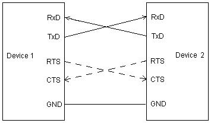

| AsynchroSerial | |
|
|

This component encapsulates serial communication interface (UART) and provides methods and events for asynchronous serial communication.
The component provides standard features of asynchronous serial communications (if supported by hardware) and also special functions provided by the hardware:
- Number of data bits/number of stop bits
- Baud rate
- Parity
- Handshake flow control
- etc.
The component can work in two basic modes:
- Polling mode - no events available, no block transfer functions available
- Interrupt mode - user can choose from a set of events for data transfer management
When the Interrupt mode the component offers possibility to define communication buffers to further extend the functionality of the component with block transfer functions. The driver of the component stores all the incoming data to the input buffer and automatically transmits all the data from the output buffer. All the send/receive methods operate on the internal buffers.
The AsynchroSerial component also offers possibility to control the data transfer with standard RTS/CTS handshake mechanism:
- CTS - an input pin. When in low level the device is allowed the send data. When in high level the device has to stop transmitting.
- RTS - an output pin. When the device is able to receive data the RTS is set to low level. If the device can't accept new data the RTS is set to high level.
The following picture shows an example of a connection between two DCE devices (RS232C interface) with a possible handshake (dashed line):
|  |
For information about the SCI and the LINPHY interconnection options please see Table of the LINPHY interconnection options.